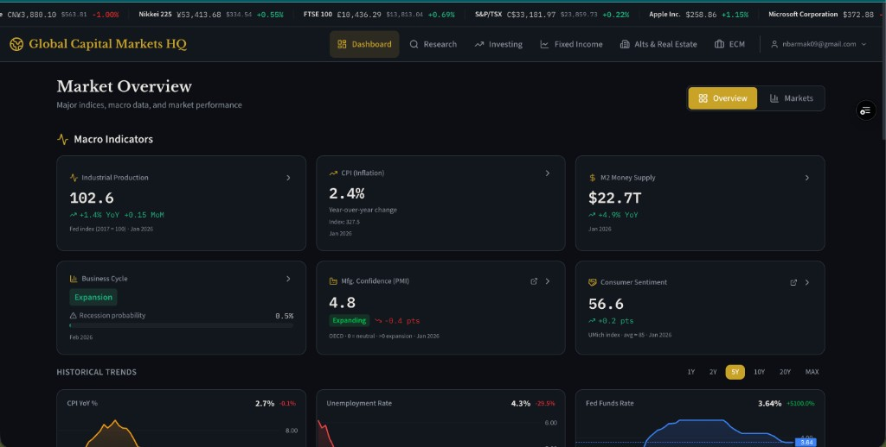

Global Capital Markets HQ
Next.js dashboard · gcm-hq
Global Capital Markets HQ (gcm-hq) is a personal Next.js dashboard for markets and research: live-style quotes and charts (via Yahoo Finance), macro and FX panels, sector and market views, ECM-oriented content, and portfolio tooling. It is wired into one app with auth (NextAuth + Prisma/Postgres), a Research area (Discover plus an Anthropic-powered “financial research assistant” chat), and routes that mirror how I actually work: dashboard, stocks, screener, filings, models, calendar, alerts, allocation, pitch, and the rest.
It is not a thin demo: it is a single place I control for market data, news, ideas, and workflow instead of jumping across many sites and terminals.
Why I built it (Capital IQ / Bloomberg angle)
Cost. Professional terminals and data platforms are built around subscriptions and seat licenses. This stack leans on public or low-friction data paths (e.g. Yahoo for quotes, history, and news in code) plus my own infra, so I am not paying Bloomberg/CapIQ-style fees to get basic research and monitoring done.
Control and learning curve. Bloomberg and similar products optimize for power users and broad coverage, with dense UIs, many functions, and a real onboarding tax. I built my own navigation and layout: only the screens I care about, in an order that matches how I think about markets (overview → research → investing / fixed income / alts → ECM, etc.). That trades vendor polish for speed and familiarity on day one.
Honest caveat: This does not replicate proprietary datasets, deep historical fundamentals bundles, or compliance-grade feeds those platforms sell. What it does is replace the workflow and a lot of the routine web research with something cheaper, faster for me to use, and fully mine to extend.